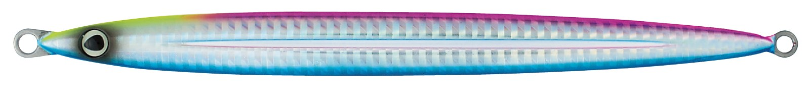
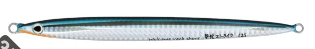
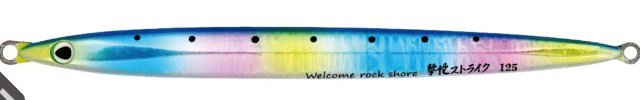
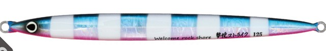

撃投ジグ ストライク
（GEKITO JIG STRIKE）
撃投ジグ ストライク（GEKITO JIG STRIKE）はCultiva（カルティバ／オーナーばり）のショアジギング用メタルジグです。
ただ頑強なだけじゃない、大型青物迎撃ロング。ブリ・カンパチ・ヒラマサなど、磯からの大型青物を狙うためのメタルジグです。
ショア青物専用ブランド「撃投」シリーズのロングモデル。ステンレス鋼板の「タフボーン」を内蔵して変形しにくく、着水後のフォールの速さはシリーズ最速。激流の離島でも底を取りやすく、スライドから水平フォールへの移り変わりで大型青物に口を使わせます。

画像出典:撃投サイト（オーナーばり公式）
スペック
- メーカー
- Cultiva（カルティバ／オーナーばり）
- タイプ
- ロングジグ（極わずかにフロントウエイト）
- 重さ
- 65g／85g／105g／125g／150g／200g／250g
- 全長
- 145mm（65g）〜225mm（250g）
- 構造
- ステンレス鋼板「タフボーン」内蔵・耐衝撃塗装
- ターゲット
- ブリ・カンパチ・ヒラマサなどの大型青物
- 価格
- 1,350円（65g）〜2,350円（250g）（税別）
▼今すぐチェック

撃投ジグ ストライクの特徴
曲がらない・沈みが速い・よく飛ぶ、磯の大型青物用ロングジグ
-
ステンレス鋼板「タフボーン」で曲がりにくい
ワイヤーではなくステンレス鋼板を内蔵して、大型青物とのファイトでも変形しにくい。塗装も耐衝撃仕様で、磯にぶつけてもその部分だけがへこむように作られている。
-
フォールの速さはシリーズ最速
エッジに丸みを持たせて、フォール中の横滑り（スライス）を無くした設計。150gなら、激流でも+30gくらいの感覚で底が取れる。
-
スライド→浮遊→水平フォール
センターのキールがタイトなローリングの水平フォールを生み、ジャーク後はまっすぐロングスライド。普通のジグより大型青物に見切られにくい。後ろ側のスリットが飛行姿勢を安定させ、ロングジグとは思えない飛距離が出る。
撃投ジグ ストライクの使い方
基本はキャストして着底させ、ワンピッチジャークで誘い上げるショアジギングの使い方です。
ジャークで大きくスライドさせたあと、ラインを少し緩めて水平フォールの「間」を作るのがコツ。横引きでのロングスライドとフォールを組み合わせて、食わせのタイミングを入れていきます。
撃投ジグ ストライクの得意な状況
磯からのヒラマサ・ブリ・カンパチなど、大型青物狙いが得意です。
沈みが速いので、潮の速い離島や水深のある磯、底を取りにくい状況で特に頼れます。
ワンポイント
重さは「底が取れる一番軽いもの」が基本。潮が緩い場所なら85〜105g、激流の離島や深場では125〜150g以上を選びましょう。
ストライクのサイズの使い分け
| 重さ | 全長 | 価格（税別） | こんな時に |
|---|---|---|---|
| 65g | 145mm | 1,350円 | 堤防や潮の緩い磯で、青物を広く探る時 |
| 85g | 159mm | 1,450円 | 磯の青物の基本サイズ |
| 105g | 171mm | 1,600円 | 水深や潮の速さがある磯の定番 |
| 125g | 181mm | 1,750円 | 潮が速い場所、大型ヒラマサ狙い |
| 150g | 191mm | 1,950円 | 激流の離島・深場 |
| 200g | 209mm | 2,150円 | さらに深く、流れの強い場所 |
| 250g | 225mm | 2,350円 | 超激流・大水深の離島 |
※全長は公式のサイズ一覧、価格は公式の希望本体価格（税別）より。
オススメカラー
ストライクは定番色に加え、グロー・ケイムラ系など20色以上（サイズでカラー数は違います）。そのうち4色を紹介します（画像は公式のカラーチャートより）。

34 ブルピンドット青物の定番ブルピンに発光ドット。まず1本選ぶならこの色。

35 きびなごいわしキビナゴを意識したナチュラル系。澄み潮の日中や、スレた青物に。

37 湾岸今永イワシブルー・ピンク・イエローを組み合わせたアピール系。朝マズメに。

39 ブルピンゼブラブルピンにゼブラ柄を入れて、シルエットをはっきり見せるカラー。濁りや曇りの日に。
画像出典:撃投サイト（オーナーばり公式）
撃投ジグ ストライクに似ているルアー
-
 撃投ジグ レベル
カルティバ
詳細はこちら＞
撃投ジグ レベル
カルティバ
詳細はこちら＞
同じ撃投シリーズのフロントウェイトジグ。スローな操作で食わせたい時に。
-
 メタルジグ 伍号
ALLGU FISHING
詳細はこちら＞
メタルジグ 伍号
ALLGU FISHING
詳細はこちら＞
20〜250gまでそろうショアジギング用メタルジグ。
-
 フォルテンTG
ブルーブルー
詳細はこちら＞
フォルテンTG
ブルーブルー
詳細はこちら＞
タングステンでシルエットが小さく、深場や潮の速い場所でも沈めやすいジグ。